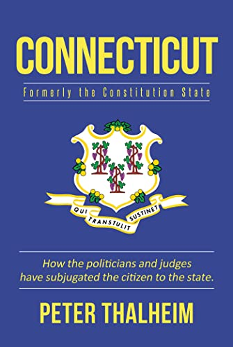

Book: Connecticut Formerly the Constitution State: How the Politicians and judges have subjugated the citizen to the state.
By Peter Thalheim
My Illustration on the back cover. 2020.
Illustration owned by Peter Thalheim.
Book: The School to Prison Pipeline: How the Public School Monopoly and Teachers’ Unions Deny School Choice to High-Needs Black, Hispanic, White, Asian, and Other Students.
By Peter Thalheim.
My Illustration on the back cover. 2020.
Illustration owned by Peter Thalheim
Book: Check "American" and the 2020 Census: Why "American" should be the first category offered for your race, creed, color and ethnicity.
By Peter Thalheim.
My Illustration on the back cover. 2020.
Illustration owned by Peter Thalheim